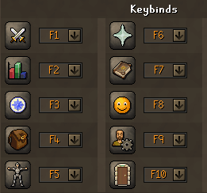
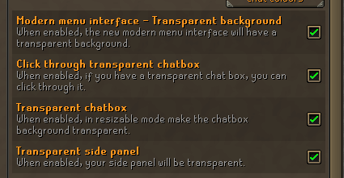

How to use
Five minutes to set up, then it's one button. Read the whole page once.
1Install (once)
- Have RuneLite installed. The Jagex launcher is fine.
- On Downloads, sign in and download CS4452-Setup.cmd. Run it, press Enter.
- Double-click CS4452 Play on your Desktop. It's a separate RuneLite with its own settings. Your normal one's plugins and settings aren't touched; it only borrows its Java and your Jagex login.
Windows may say "Windows protected your PC": click More info, then Run anyway.
2Game settings (match these, once)
The bots press the game's own keys and click its own buttons, so the game has to be set up the way they expect. In-game: Settings (the gear), then Controls → Keybinds, and Interfaces.
Keybinds

| Combat | F1 | Prayer | F6 |
| Skills | F2 | Magic | F7 |
| Quests | F3 | Friends | F8 |
| Inventory | F4 | Account | F9 |
| Equipment | F5 | Logout | F10 |
Interfaces: tick all four

- Modern menu interface – Transparent background
- Click through transparent chatbox
- Transparent chatbox
- Transparent side panel
Everything else can stay as you like it.
3Running a bot
- Open the CS4452 Bots panel: that icon, in RuneLite's side bar on the right. Every bot is there with its few settings. What each one does is on the Bots page.
- Stand where the bot wants you (its card says), with the right things in your bag or bank, and press Start.
- ` ~ (the key left of 1) pauses and resumes. It's the same key for every bot.
- Run one bot at a time. Keep the others off.
- Out of a required item, or stuck for a few minutes, it stops and tells you why.
You start with our settings: combat setups, recipes, presets, break times. Change what you like; your changes stick.
4Three things to leave on
Auto Login
Nothing to set up. Log in through the Jagex launcher once and CS4452 Play logs in as that account by itself, and logs back in after a break or a disconnect. Just leave the plugin on.
Breaks
Every so often the bot stops for a few minutes and logs out, like a person would, then carries on. Leave it on. The times are in the Breaks plugin if you want them different.
CS4452 Updater
Two jobs. It fetches new versions (you'll see "restart RuneLite to use it"), and it sends the bots' own log lines home so problems get fixed. Only the bots' lines: no chat, no bank, no account names, no passwords. Kept 3 days, then deleted. Leave it on; it's how a bug you hit gets fixed. Hit one? Report a problem.
5What's in the list
Everything starting with CS4452 is ours. Two kinds:
- Bots (Combat, Fishing, Agility, Hunter, Thieving, Magic, Processor and the rest): they play for you. Start them from the Bots panel, one at a time.
- Helpers: they don't play, they help, and can stay on. Bank Manager swaps your gear and bag to a saved preset in one go. Money Maker ranks money-making methods by live prices. Breaks, Auto Login, Pathing (the walking the bots use) and the Updater work without a panel.
Fashionscape v2 is just looks; only you see it.
6Be honest with yourself
Anything that clicks for you is against the rules and can get the account banned. That's the bots, and it's Bank Manager too. Breaks, one bot at a time and not running it all night make it look more like a person, not less against the rules. Don't do this on an account you'd cry over.
Removing it
Run the installer again and press U. CS4452 Play, its shortcut and everything it saved are deleted. Your normal RuneLite was never changed, so there's nothing to undo there.